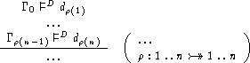
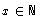
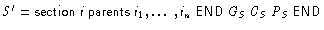
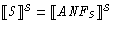
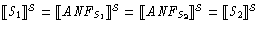
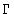

WG.48.3: Independence of Textual Order of Paragraphs
Proposal for the Z Standard, by Wolfgang Grieskamp (wg@cs.tu-berlin.de), November 11, 1998, (v3) , postscript version
The order how paragraphs appear in a Z section is arbitrary. The definition-use relation of paragraphs must be acyclic. (A paragraph is in definition-use relation to another paragraph, if it introduces a name which is referred to by the other paragraph.)
Shortly: the adequate way to structure the paragraphs of a section is not always bottom-up. (As far as I know, the panel already agreed that paragraph reordering is useful in general.)
Proposal WG.48.2 is assumed, such that redefinition of
and  is prohibited.
is prohibited.
[...] These associations extent over the entire Z section they are defined within and are disabled at the end of the section. [...]
The order how paragraphs appear in a Z section is arbitrary. The definition-use relation of paragraphs must be acyclic. (A paragraph is in definition-use relation to another paragraph, if it introduces a name which is referred to by the other paragraph.)Define reordering (and cycle check) as a condition to the rule. This could be something along:

Consider there are two possible well-formed (well-typed) re-orderings S1 and S2 of a section. Are these always semantically equivalent? Here is a justification which actually reduces the problem to a desirable property of the semantic equations in general (which seems to be fulfilled in WD 1.5 - yet this still needs to be counter-checked by the authors of clause 16).
From any section, one can syntactically build what I would call the algebraic normal form, ANFS = (GS,CS,PS), where GS, CS, and PS are sets of paragraphs, which are constructed as follows:

). For free types, PS contains the set of according free-type axioms.From ANFS one can reconstruct a Z sections

, where the individual paragraphs from GS (resp. CS and PS) are ordered arbitrarily, and which is by construction definition-before-use. Now we assume that the semantics equations ensure that for each arbitrary arrangement of S' (according to the degrees of freedom in ordering individual paragraphs from GS, CS, and PS) it holds:
. Now since ANFS1 = ANFS2 if S1 and S2 are reorderings of the same section, which is obvious since for the construction of the ANF the order how paragraphs are added to the sets GS (resp. CS and PS) doesn't matters, we can conclude that
.
Since the token mapping introduced by operator templates needs to hold over an entire section, tools need to evaluate the templates before actual parsing begins. This can be achieved by evaluating the syntax of operator templates already at scanning time.
If a zed-markup-box would be introduced for the LATEX-markup
in Annex A.3, then inside of this markup template paragraphs should
not allowed to be mixed with other paragraphs. A lexer would not be
able to recognise the operator templates easily, since hard-newlines
separating paragraphs are converted to soft-newlines in dependency of
the keywords introduced by templates.
As can be drawn from the literature about type-inference for functional languages, it is not possible to check the unordered paragraphs of a section ``at once'' by global type unification. Trying so what amount to type inference in the presence of polymorphic recursion, which is not decidable. (The problem has been merely depicted in WD 1.5, Sect. 13.3, p67: ``[need to] finalise the type of a generic definition before type-checking instantiations of that generic definition''.)
As well, it is not possible to reorder paragraphs prior to type-checking, since the construction of the definition-use relation of paragraphs requires type information. This is a consequence of the fact that in Standard Z axiomatic definitions may include an arbitrary expression denoting a schema in their declaration part. To derive what names are introduced, the type of the included expression needs to be inferred.
Therefore an implementation of paragraph reordering needs to be interleaved with type-checking. However, there is a simple model how this interleaving can be realized using a modular extension to existing type-checking algorithms: check each paragraph of a section by a parallel executing thread, and let these threads synchronise via the global constant environment

:
In practice, the handling of deadlocks has to be instrumented to produce meaningful error diagnostics.